Updated at 12 October 2026
This guide explains Singapore Mahjong as played in MahjongLeh, including house rules you can adopt at your own table. Start with Singapore Classic. A house rule is an optional variation: use it only when everyone has agreed before play. Agree on the scoring limits and payment amounts before the first deal. The sections below explain what each variation changes.
MahjongLeh closely follows the Singapore Mahjong rules. Singapore Classic is played with 148 tiles from three different categories — Suits, Honors, and Bonus tiles.
There are 3 types of suit tiles, with 9 numbers per suit and 4 copies of each tile, totaling 108 suit tiles:
There are 2 types of honor tiles: 4 types of Wind tiles and 3 types of Dragon tiles, with 4 tiles per type, adding up to 28 honor tiles in total
2 types of bonus tiles: 8 types of Flower tiles, 4 types of Animal tiles, adding up to 12 bonus tiles in total:
Terminal tiles are the 1s and 9s of the three numbered suits.
Both Seasons and Flowers are called Flower tiles in this guide. Their numbers match the seat winds: East = 1, South = 2, West = 3, North = 4.
Natural tiles are the ordinary numbered Suit tiles, Winds and Dragons. Flowers and Animals are bonus tiles, so they are not natural tiles. A wildcard can stand in for a missing natural tile. The optional Fei / Joker rule adds these wildcards to the set; a Fei is neither a natural tile nor a bonus tile.
For a standard winning hand, form four sets (melds) and one pair (also called the Eye). A set can be either:
A pair, also called the eye, consists of two identical tiles. Tai (台) are scoring units earned from your hand and bonuses. Agree on the minimum Tai needed to win before playing. Once you have four sets and an eye and meet that minimum, you can declare a win, called Hu. See Scoring & payments for the awards and payment examples. Credits are the payment units used in those examples; agree on their value before play.
If your table plays with Fei / Joker, a wildcard may complete a group within the limits explained below. Fei cannot be discarded or used in a Gang.
Four players choose their places and a starting dealer before play. Players keep their places throughout the session. The dealer is East. The dealer position moves to the next player in counterclockwise turn order after a hand, except when the dealer wins, or when the hand ends in a stalemate and no Gangs were formed.
Each round has a Prevailing Wind (the round Wind), and each player has a Seat Wind.
The wall is the face-down supply of tiles. Ordinary draws come from the front; replacement draws come from the back. The final 15 tiles are reserved and cannot be drawn.
Deal 13 tiles to each player, then give the dealer (East) an extra 14th tile. Keep track of which bonus tiles belonged to each player's original 13: the dealer's extra tile is excluded from the higher opening-pair payment, but still participates in opening win checks and bonus replacements. The dealer begins with that extra tile and does not take another ordinary draw before their first discard. After the opening turn, players take turns in counterclockwise order:
Tiles kept in your hand are concealed. A group shown after claiming another player's discard is an exposed meld. During play, you can form melds using your own tiles or by claiming a discard:
Give everyone a chance to claim each discard before the next draw. Among legal claims, the priority is Hu, then Gang, then Pong, then Chi. Responding first gives no priority. If several players declare a legal Hu on the same tile, only the player nearest after the discarder in counterclockwise turn order wins. For competing Robbing the Gang wins, count from the player declaring the Gang.
After Chi or Pong, the claimant reveals the meld and discards without an ordinary draw. After Gang, the claimant draws a replacement and then wins or discards. In either case, if nobody claims that discard, the next player after the claimant draws. Seats between the original discarder and an out-of-turn claimant are skipped. Among competing Pongs, the nearest claimant after the discarder wins; when using Fei, first apply the fewer-Fei priority.
Before normal play begins, reveal and replace all Flowers and Animals in the dealt tiles, including the dealer's extra tile. If a replacement is another bonus tile, reveal and replace it again. Keep track of the original 13 for opening payments. When using optional Fei opening wins, first perform any agreed check before replacements.
Whenever you draw a Flower or Animal during play, you must:
Bonus tiles do not count toward your hand structure but may provide bonus Tai (台) when calculating your total Tai.
For a standard winning hand, form four sets and one pair. You can win by:
The last 15 tiles are reserved and cannot be drawn. Flower, Animal and Gang replacements come from the back of the wall while a legal replacement remains. With the optional Fei rule, Dun means setting aside a held Fei and drawing a replacement; its draws use the same back of the wall and 15-tile reserve.
A hand ends when:
An ordinary wall-exhaustion stalemate has no winning-hand payout. A Fei False Win instead settles its fixed penalty. Previously settled instant payments remain settled in either case.
The Sacred Discard (回头牌) and Missed Discard (过水牌) rules restrict later claims on tiles you have discarded or passed.
In Fei games, these restrictions apply to the natural discard being claimed. Open Fei does not bypass them. A held Fei cannot be discarded; see False Win when no legal action remains.
After Chi, your immediate discard cannot be another copy of the tile you claimed. If you claimed the low end of the sequence, you also cannot discard the tile one step above that sequence; if you claimed the high end, you also cannot discard the tile one step below. These restrictions refer to the same suit.
The restriction ends after your first successful discard and does not apply after Pong. In the exceptional Dun after Chi case, the newly drawn physical replacement may be discarded even if its type is barred; an identical copy already held remains barred.
A winning hand earns Tai for its shape and eligible bonuses. Before play, agree on the minimum Tai needed to win (often 1 Tai) and the maximum Tai counted for payment. Add the awards that may be combined, then apply that maximum once. If the same tiles form more than one legal winning arrangement, calculate each separately and use the one with the highest Tai after the cap. Do not combine awards from different arrangements.
These hands and bonuses are part of Singapore Classic. They apply whenever their conditions are met; add awards that are allowed together before applying the agreed maximum Tai.
Collecting all eight Flower tiles ends the hand in a special win. Only the eight distinct Seasons and Flowers count; Animals do not. If the player drawing the eighth tile now holds all eight, they win. Otherwise, a player holding the other seven may claim the newly revealed eighth Flower from its drawer.
These two wins do not need to meet the ordinary minimum Tai. Add eligible Flower and Animal bonuses to the winning-hand award, then apply the agreed maximum Tai once. Use that Tai row in the payout table below.
Add the eligible Tai awards, apply the agreed maximum Tai once, then use that Tai row for payment. This example table uses 10 credits as the base payment at 1 Tai; every extra Tai doubles the amounts. Your table may agree on a different payment scale before play.
| Tai (台) | Each Other Opponent | Discarder | Total Credits Payout | Self-drawn Hand (自摸) | Total Credits Payout (Self-drawn Hand, 自摸) |
|---|---|---|---|---|---|
| 1 | 10 | 20 | 40 | 20 | 60 |
| 2 | 20 | 40 | 80 | 40 | 120 |
| 3 | 40 | 80 | 160 | 80 | 240 |
| 4 | 80 | 160 | 320 | 160 | 480 |
| 5 | 160 | 320 | 640 | 320 | 960 |
| ... | |||||
| 10 | 5120 | 10240 | 20480 | 10240 | 30720 |
Example scenario:
If player A discards a tile that is claimed by player B to win with an 'All Pong' hand, the hand is considered to be 2 Tai (assuming no other bonuses). According to the payout calculation, player C and D will each pay 20 credits to player B, and being the player who discarded the winning tile, player A will pay 40 credits. In total, player B will receive 80 credits.
Robbing the Gang payment: treat the player declaring the Gang as the Discarder in the payout table. Without the optional Shooter rule, that player pays the Discarder amount and each of the other two opponents pays the Each Other Opponent amount. With Shooter, the Gang declarer pays the full discard-win total and the other two opponents pay nothing. This includes the permitted Concealed Gang robbery for Thirteen Terminals.
Certain actions trigger immediate credit exchanges before the hand ends. The amounts below are examples using the same payment scale as the payout table; agree on your amounts before play. Instant payouts are settled immediately and are not affected by the final outcome of the hand. No new instant payments are made once the last drawable tile has been drawn. The optional Bite Flowers rule adds payments for another seat's Flower pair and changes instant payouts on a winning eighth Flower, as described in that section.
Use any of these variations only after everyone agrees before the deal. You can adopt them separately. First agree on payment variants, then any extra winning hands, bonus-tile payments and Fei rules you want to use.
Under the optional Shooter rule, the responsible player pays the full amount that all opponents would otherwise pay. The other opponents pay nothing. Agree to use this rule before play.
The Shooter rule applies to these events:
Agree before play whether to use either of these variations, or both. They change who pays after a Gang; the ordinary immediate Gang payments still apply.
If you claim an Exposed Gang from another player's discard and then win by self-draw during that uninterrupted replacement sequence, the original discarder pays the full self-draw total. The other two opponents pay nothing. This winning-hand payment is separate from the immediate Gang payment.
If a Gang is successfully robbed, return the immediate payment for that Gang once, then settle the Robbing the Gang win normally. Do not refund a passed, invalid or cancelled robbery, or a Gang that was not robbed. This also covers the permitted Concealed Gang robbery for Thirteen Terminals.
Using both variations: a robbed Gang is paid, refunded once, then followed by ordinary Robbing the Gang payment. Gang Shang responsibility ends. If the Gang is not robbed and the replacement sequence ends in self-draw, its immediate payment remains and the original discarder pays the full self-draw total.
Seven Pairs lets you win with seven pairs instead of the usual four sets and an eye. It is an optional variation outside Singapore Classic: agree to use it before the first deal.
Score the legal Seven Pairs and standard arrangements separately, including their eligible bonuses and the Tai cap. Use the higher capped Tai; Seven Pairs wins a tie. Do not add Seven Pairs to the standard hand's awards.
Example: a fully concealed self-drawn hand containing two of every Bamboo tile from 1 through 7 can form seven pairs or [1–2–3] [1–2–3] [4–5–6] [4–5–6] [7–7]. With a 3-Tai Seven Pairs award and its Pure Suit bonus allowed, the pairs score 3 + 4 = 7 Tai. With no Flowers, Animals or other bonuses, the standard arrangement scores Ping Hu 4 + Pure Suit 4 + Pure Suit Ping Hu 2 + Concealed Hand 1 = 11 Tai before the cap. At a cap of 10, use the standard hand's 10 Tai. At a cap of 7 or lower, both tie after the cap, so use Seven Pairs.
Agree before play whether either of these awards applies:
An instant win ends the hand as soon as its special condition is met, without needing the usual four sets and an eye. Agree before play whether Three Great Scholars, Four Great Blessings, or both may win this way. With this variation, completing a set of each of the three Dragons, or each of the four Winds, is enough to win. Their ordinary complete-hand awards remain part of Singapore Classic.
The instant win receives the listed Tai plus eligible Flower, Animal, Dragon and Wind bonuses. It must still meet the agreed minimum Tai.
In Fei games, these three Dragon sets or four Wind sets must be fully natural: Fei cannot substitute for tiles in the qualifying sets. A complete legal hand with four sets and an eye may still earn its usual Three Great Scholars or Four Great Blessings award using Fei. If the table allows Qi Fei, replacing the final Fei in an exposed Pong with a natural tile can make that Pong qualify for an Honor Instant Win. The 1 Tai per Fei set aside with Dun also counts towards this instant win's score and minimum Tai.
Animal Special assigns each player an animal for extra immediate payments. It is an optional variation outside Singapore Classic: agree to use it before play.
Agree on the payment amounts before play; the table below gives an example schedule. Here, opening 13 means only your first 13 dealt tiles. It excludes the dealer's extra 14th tile and every replacement draw. A bite payment (Yao Dao, 咬到) is an immediate payment for a qualifying bonus-tile collection, separate from the payment for winning a hand.
| Event | Each opponent pays | Effect on ordinary bite payments |
|---|---|---|
| Your assigned animal is in your opening 13 | 40 credits | Use this award for the assigned animal. |
| Your assigned animal and its partner are both in your opening 13 | 120 credits in total | Replaces the separate assigned-animal, assigned-pair and ordinary opening-pair payments. |
| You reveal your assigned animal outside the opening 13, without completing its pair | 20 credits | Includes the dealer's extra 14th tile, a replacement or a later draw. |
| You complete a pair involving your assigned animal outside the opening 13 | 40 credits | Replaces the ordinary Animal-pair payment, whichever animal was revealed first. |
With this optional variation, collecting another seat's Flower pair makes that seat's player pay you. Agree to use it before play; it is outside Singapore Classic.
A Flower and Season with the same printed number form a pair. Numbers follow the current seat Winds: East = 1, South = 2, West = 3, North = 4. Use the current seat Winds, so the payer can change as the dealer rotates. The higher opening payment requires both pair members in your original 13; it excludes the dealer’s extra 14th tile and all replacements, regardless of reveal order.
| Event | That seat's player alone pays |
|---|---|
| Complete another seat's same-number Flower and Season pair | 20 credits |
| Both tiles of that pair were in your original 13 dealt tiles | 40 credits |
When playing Bite Flowers, if the eighth Flower ends the hand through All Flowers and Seasons or an accepted Robbing the Eighth claim, settle only that Flower win for the new tile. Do not add a new pair or same-group instant payment. Earlier payments remain settled. If Robbing the Eighth is declined, make any eligible instant payments and continue replacement draws. This exception applies only when using Bite Flowers.
Fei are optional wildcard tiles added to a Singapore Mahjong set. A wildcard can stand for a missing ordinary tile when you make a legal hand. Agree on the Fei rules before dealing; the extra actions and awards below apply only when your table has agreed to use them.
A few terms: a natural tile is an ordinary suit or honor tile, excluding Flowers, Animals and Fei. Concealed tiles remain in your hand; an exposed meld is a group shown on the table. An eye is the pair in a standard winning hand. Tai are scoring units.
Physical families are the printed faces and colours: red Fei, red Fei Joker, Blank Fei, blue Fei, blue Fei Joker, green Fei and green Fei Joker. They all have the same wildcard uses. Their printed identity matters for Four Matching Fei and Five Different Fei, even when they represent the same natural tile. Blank Fei is a playable wildcard, separate from the natural White Dragon (白板).
Start here: use Fei to fill gaps in legal groups, but remember that Fei cannot be discarded. A standard Fei-assisted win still needs four sets and an eye, and must meet the table's minimum Tai. Special hands and opening instant wins have their own conditions below.
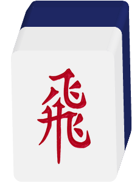
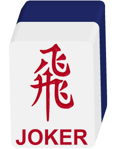
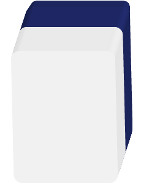
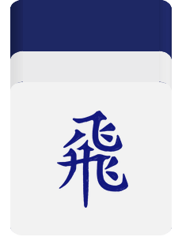
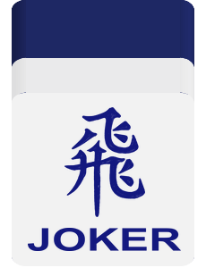
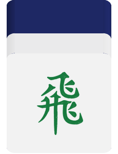
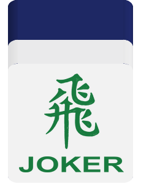
| Where it is | What it means |
|---|---|
| In your hand | A wildcard available for a legal winning hand or a Fei-assisted discard claim agreed by the table. It cannot be discarded. |
| In an exposed Chi or Pong | It represents the natural tile chosen when the meld was made. That identity stays fixed. |
| Set aside with Dun (declare Fei) | You set it aside face-up and take a replacement tile. It is no longer part of your hand or a meld, and adds 1 Tai if you later win. |
Fei are not Flowers or Animals, so drawing one does not require you to reveal or replace it. Keep it in your hand unless you use it in a legal claim or set it aside with Dun.
A Fei may stand for a missing natural tile, but every group must still have a legal shape:
The complete hand must meet the table's minimum Tai and the usual rules about where the winning tile comes from, when you may win, and which discards are allowed. Each natural tile type has four physical copies. Count actual natural tiles in your hand and among public tiles, counting a claimed winning tile only once. That total must not exceed four. Fei do not count toward it: a Fei remains a wildcard, not an extra physical copy of the tile it represents. Any agreed public-tile limits also apply.
Special hands:
The usual maximum Tai cap and agreed payments apply. Merely holding a Fei gives no Tai. A legal ordinary hand containing Fei may win by Robbing the Gang, taking the natural tile used to add to an exposed natural Pong. This does not allow a Fei inside the Gang.
Concealed two-Fei Chi example: 7 Dots–Fei–Joker may represent 7–8–9 Dots. Keep that sequence concealed; your other groups may be exposed. It can form part of a legal win on self-draw or a tile from another player when the win is allowed, in either Open or Closed Fei. It does not let you claim a Chi with two Fei. A hand with four Chi sets may qualify for Ping Hu if the whole hand meets its scoring conditions. The hand must still meet the minimum Tai and any agreed public-tile limits.
Concealed two-Fei triplet example: North + Fei + Joker may represent three Norths, even if claimed Pongs are limited to one Fei. It earns the usual Wind Triplet Bonus when North is the round wind or your seat wind, and both bonuses when it is both. A concealed Fei may be used in the best legal winning arrangement. A Fei in an exposed Chi or Pong stays assigned to that meld and cannot be moved into this triplet. Minimum Tai, the Tai cap, any agreed matching-tile rule and public-tile limits still apply.
Why holding a matching tile matters: some tables require a matching natural tile already in your hand before two Fei can complete a triplet using another player's tile. Under that agreement, West + two Fei already held is legal, and a self-drawn West may also complete the triplet. A discard may complete a different group. But two held Fei alone cannot use a discarded West as their only natural tile, whether claiming Pong, Hu or Robbing the Gang. Another legal arrangement may still win. See the matching-tile agreement below.
Thirteen Wonders example: hold 9 Bamboo, 1 and 9 Character, 9 Dot, all three Dragons, all four Winds, a second North and two Fei. The Fei fill 1 Bamboo and 1 Dot, with natural North eyes. This may win on self-draw without Fei Zou Jie, subject to the table's other rules.
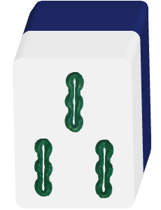
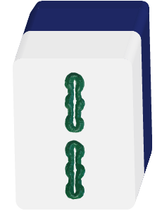
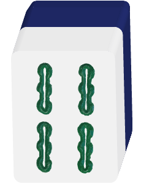
3 Bamboo + 3 Bamboo + Fei can form a triplet of 3 Bamboo. 2 Bamboo + 4 Bamboo + Fei can form 2–3–4 Bamboo. 3 Bamboo + two Fei already held, or completed by your own draw, can form a concealed triplet in Open or Closed Fei, even when claimed Pongs allow only one Fei. To claim a discarded 3 Bamboo using two Fei, the table must allow that Open Fei claim and must not require a matching natural tile already held. Three Fei cannot form a triplet, and two Fei cannot form ordinary eyes.
Closed Fei means you cannot use Fei to claim another player's discard for Chi or Pong. You may still make fully natural claims, and may declare a legal Hu using Fei already in your concealed hand. It does not limit concealed winning sequences or triplets to one Fei.
Open Fei allows Fei-assisted discard claims. Agree which claims your table permits:
Also agree whether a claimed Pong may contain one or two Fei. This limit applies to claimed Pongs and the exposed Pongs they create; it does not reduce the two-Fei limit for concealed winning triplets. An exposed Fei keeps the natural identity assigned when its meld was made. The discarded tile must be natural, and normal claim restrictions still apply.
Optional matching-tile rule: when allowing two Fei, the table may require that you must already hold a matching natural tile. If this requirement is used, an incoming discard or a tile taken by Robbing the Gang cannot be the sole natural tile in a triplet with two Fei. It also applies when that triplet completes a winning hand. A matching natural tile already held, or one you draw yourself, may complete the concealed triplet. If the table does not use this requirement, an otherwise legal two-Fei triplet may use the incoming natural tile alone.
Among legal Pong claims on the same discard, fewer Fei takes precedence. Count all three tiles in the completed Pong, including the claimed natural discard:
A Pong with fewer Fei wins even if its claimant sits farther from the discarder. If the Fei counts are equal, the nearest claimant after the discarder in turn order wins, wrapping around the table. Responding first gives no priority, and the printed Fei family does not affect the ranking.
Only legal claims enter this ranking. The agreed Open or Closed Fei rules, claimed-Pong limit, matching-tile rule, public-tile limits and discard restrictions still apply. Normal action priority remains: Hu outranks Gang; Gang outranks Pong; Pong outranks Chi.
Suppose your table uses Fei and Fei Joker, allows Open Fei Suit Pongs with up to two Fei, and does not require a matching natural tile already held. A player discards 3 Bamboo. These pictures show two Pongs competing for that same discard; only the winning Pong is made.
Equal Fei count: suppose turn order is A → B → C → D → A. D discards 3 Bamboo, and A and C each claim with one natural 3 Bamboo and one Fei from hand. Both Pongs have 1 Fei, so A wins as the nearest claimant after D, even if C responds first or uses a different Fei family.
Dun lets you set aside a concealed Fei and draw a replacement. Your table must agree to allow it, and a replacement tile must remain available.
The dealer may Dun during the first normal turn, after the opening win checks and Flower/Animal replacements. Other players normally wait for their own draw turn, including a Gang replacement draw. There is no separate opening Dun round.
Exception after Chi or Pong: if your claim leaves no legal discard, you may Dun to avoid False Win when Dun is allowed and a replacement remains. This exception does not permit Dun after every claim. After Chi, the original discard bans still apply to tiles you already held. A newly drawn natural replacement may be discarded, even if it has the same value as a barred tile.
Your hand receives one back-wall replacement. The set-aside Fei can add +1 Tai to your later win.
Fei in hand → Dun → Fei set aside + one replacement in hand. If you Dun twice, you take two replacement draws and have +2 declared-Fei Tai available if you win later. You receive no credits merely for declaring them.
Qi Fei lets you replace a Fei in your own exposed meld with the natural tile it represents, returning the Fei to your hand. Your table must allow both Open Fei and Qi Fei.
To exchange a Fei from a Chi, the table must also allow Fei-assisted Chi claims and Qi Fei from Chi. You cannot exchange using an older tile already in your hand, another player's discard, another player's meld, or a Gang. You may exchange once per draw, including a matching replacement draw.
Qi Fei gives no extra wall tile and no Tai by itself. The meld stays exposed. Once every Fei in a Pong has been replaced, it is a natural Pong and may later be upgraded with a fourth natural tile under the usual Added Gang rules. Continue your turn; the returned Fei may be used in a legal win or set aside with Dun if eligible.
A win immediately after Qi Fei counts as self-draw. If the exchanged natural tile was a replacement, that win keeps the eligible Replacement Tile or Double Gang bonus. Qi Fei alone gives neither bonus. Ordinary self-draw payments, including any qualifying Gang Shang responsibility, still apply to that immediate win.
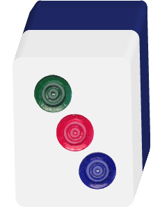
Your exposed Pong is 3 Circles + 3 Circles + Fei representing 3 Circles. On drawing a natural 3 Circles, Qi Fei leaves three natural 3 Circles in the exposed Pong and returns the Fei to your hand. An older 3 Circles already in your hand cannot make that exchange.
A complete four-set-and-eye winning hand, including a legal Fei Zou Jie hand, earns this award if you hold at least four concealed Fei from one physical family. Agree on the award before play; the examples here use 5 Tai. Award it once, even if you hold more than four or more than one qualifying family. A self-drawn Fei counts. Fei in exposed melds or set aside with Dun do not.
Optional opening instant win: the table may also let four matching Fei win immediately at the start, without a complete four-set-and-eye hand. Agree on when to check:
Check eligible players starting with the dealer and continuing in turn order. A player may pass. The agreed Four Matching Fei award must reach the minimum Tai: a 5-Tai award cannot trigger this win at a 6-Tai minimum.
Score this instant win using only the agreed Four Matching Fei award, then apply the maximum Tai cap. Do not add Flower, Animal, Dun, other hand or winning-source bonuses. If the dealer already has a legal complete opening hand that pays more after the cap, use that hand's ordinary scoring instead. On an exact payout tie, use the instant-win award. Settle using the self-draw columns: each of the three opponents pays the Self-drawn Hand amount. The Shooter rule does not change this payment.
Run the opening check only once at the agreed opening time; do not repeat it after Dun. Collecting four matching Fei later does not end the hand by itself. You still need a complete legal winning hand.
Four Fei Joker qualify as one family. Two Fei + two Fei Joker do not, even if all four represent the same natural tile.
This optional award uses a 20-, 24- or 28-Fei set with four tiles of each physical family. Hold at least five different Fei families concealed in your hand. Each family counts once, however many copies you have. Fei in exposed melds or set aside with Dun do not supply a missing family, and neither does another player's winning discard. Other legal exposed groups do not prevent this award.
With a complete legal ordinary winning hand, add the table's agreed award; 5 Tai is the example award. This award remains available if the opening instant win is not used or its opening check has passed. It may score alongside Four Matching Fei when both concealed conditions hold. Keeping five different Fei does not end a later hand by itself.
Optional opening instant win: the table may let five different concealed families win without a complete ordinary hand. Agree whether to check immediately after the deal, before bonus replacements, or after opening Flower/Animal replacements and before the first turn. The dealt-tile check includes the dealer's extra 14th tile, as for Four Matching Fei. The agreed award must reach the minimum Tai, and the maximum Tai cap still applies.
Score the instant win using only the agreed Five Different Fei award, then apply the maximum Tai cap. Do not add Flower, Animal, Dun, other hand or winning-source bonuses. Settle using the self-draw columns: each of the three opponents pays the Self-drawn Hand amount. The Shooter rule does not change this payment.
Example: one concealed red Fei, red Fei Joker, Blank Fei, blue Fei and blue Fei Joker meet the five-family count in a 20-Fei set with four of each family. Four red Fei plus one blue Fei give only two different families. Count the printed faces, regardless of which natural tiles they might represent.
Fei Zou Jie is an optional way to complete the eye. An ordinary winning hand still needs four legal sets. When your table allows this rule:
All ordinary groups still obey the normal Fei limits and must contain natural tiles. Zou Jie also permits two-Fei eyes for the self-drawn Fei special hands: Thirteen Terminals still needs its distinct terminal/honor shape, and Nine Heavenly Gates still needs a fully concealed hand and legal groups. Their Fei-assisted special awards remain self-draw only.
Example: you already have three legal sets, with 2 Bamboo + 4 Bamboo + Fei + Fei Joker still concealed. A winning 3 Bamboo completes the fourth set, 2–3–4 Bamboo. The Fei and Fei Joker form the special eye. The complete hand must still meet the table's rules about winning tiles, minimum Tai and public-tile limits.
Agree whether Zou Jie allows self-draw only or also eligible natural discards. This special route cannot win by Robbing the Gang. Allowing natural discards does not allow Fei-assisted Thirteen Terminals or Nine Heavenly Gates awards from a discard or Robbing the Gang.
Zou Jie adds 0 Tai, does not bypass the minimum Tai, and obeys public-tile and discard restrictions. Holding two Fei does not guarantee a win on every tile. When more than one legal arrangement completes the hand, score the arrangement with the highest payout after the Tai cap.
Public tiles are visible discards and natural tiles in declared melds. They also include a declared Concealed Gang if its identity is public. Count a claimed discard only once. Tiles still in a concealed hand do not count, and a Fei representing a tile is not a physical natural copy.
If the table agrees to use these limits:
The table may additionally ban a second exposed Pong of the same tile, even when the later Pong is fully natural. Use this extra rule only with the public-tile limits. It still allows a fully natural concealed triplet.
A Fei already legally assigned in an exposed meld keeps that identity when more natural tiles become public later. Its earlier use remains legal. If Qi Fei returns it to your hand, its next use must meet the current limits.
Add your agreed Fei tiles to the normal 148-tile set and keep the 15-tile reserve, the tiles held back from ordinary draws. For example, 8 Fei may be four red Fei and four red Fei Joker; 12 may be four each of red Fei, red Fei Joker and Blank Fei. A 20-Fei set with four of each of the first five families supports Five Different Fei; sets of 24 or 28 add the green families. More tiles with one printed face still count as just one physical family.
Use this checklist before dealing:
Fei cannot be discarded. If your turn has no legal discard and no other legal action, the hand ends as False Win / Invalid Hand. This can happen after drawing, after Chi or Pong, or after Qi Fei returns a Fei to your hand. First check whether a legal win or Dun is available, including the post-claim Dun exception above. Passing on a win does not make a Fei discardable. This dead end may still be False Win when the last drawable tile has been reached, rather than an ordinary stalemate.
The affected player pays each opponent 32 times the table’s base payment at 1 Tai. This is the fixed 6-Tai base amount: do not double it for self-draw or apply the normal Tai cap. For example, with a 10-credit base, each opponent receives 320 credits (960 in total), even if the normal maximum is 5 Tai. Earlier instant payments remain settled. See the payment scale.